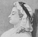
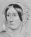

Collective Biographies of WomenAn Annotated Bibliography
Alison Booth
887.
Wilmot-Buxton, Ethel Mary. A Book of Noble Women. Boston: Small, Maynard; London: Methuen, 1907.
Search OCLC WorldCat for this title.
Search Google Books for this title.
Wilmot-Buxton, Ethel Mary. A Book of Noble Women. Boston: Small, Maynard; London: Methuen, 1907.
TOC: Jeanne d'Arc, the Maid of France; Jeanne d'Albret, Queen of Navarre; Mary Stuart, Queen of Scots; Mère Angélique; Marie Thérèse, Queen of Hungary; Marie Antoinette, Queen of France; Madame Roland; Hannah More; Fanny Burney; Elizabeth Fry; Jane Austen; Dorothy Wordsworth; Mary Somerville; Charlotte and Emily Brontë; Sister Dora; Elizabeth Barrett Browning.
Author of Jeanne d'Arc (New York: Stokes, [1914]), and numerous histories of early Britain, religious figures, etc.
-
 Charlotte Bronte
Charlotte Bronte -
Dorothy Wordsworth
-
Elizabeth Barrett Browning
-
Elizabeth Fry
-
 Fanny Burney (Madame D'Arblay)
Fanny Burney (Madame D'Arblay) -
Hannah More
-
 Jane Austen
Jane Austen -
Jeanne D'Albret in 1570
-
 Madame Roland
Madame Roland -
Marie Antoinette Hearing Her Accusation Read
-
 Marie Therese, Queen of Hungary and Empress of Germany
Marie Therese, Queen of Hungary and Empress of Germany -
Mary Somerville
-
 Sister Dora
Sister Dora
Search OCLC WorldCat for this title.
Search Google Books for this title.